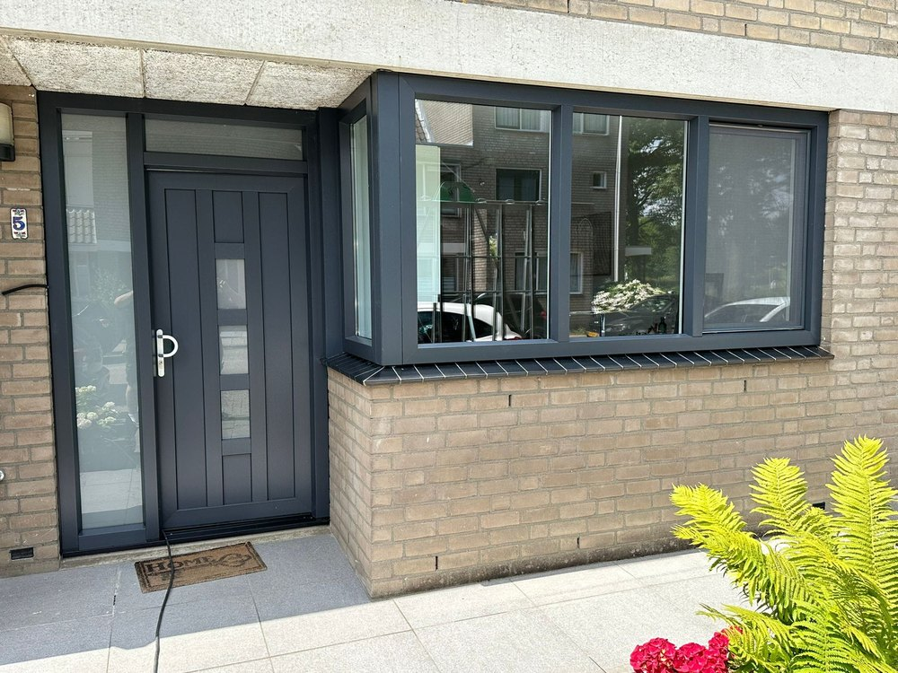
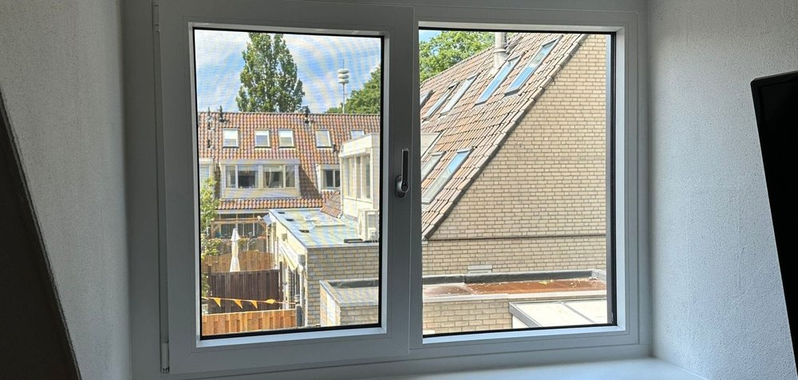
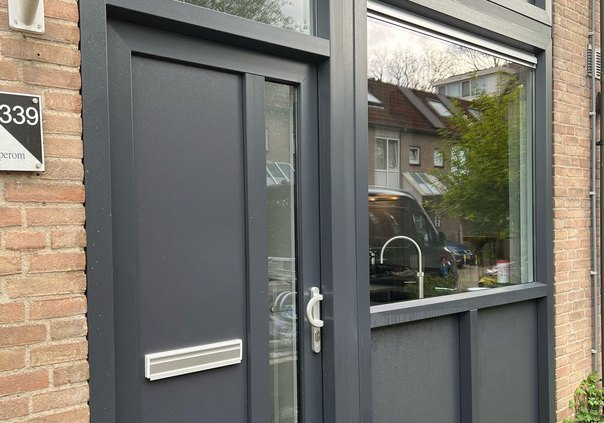
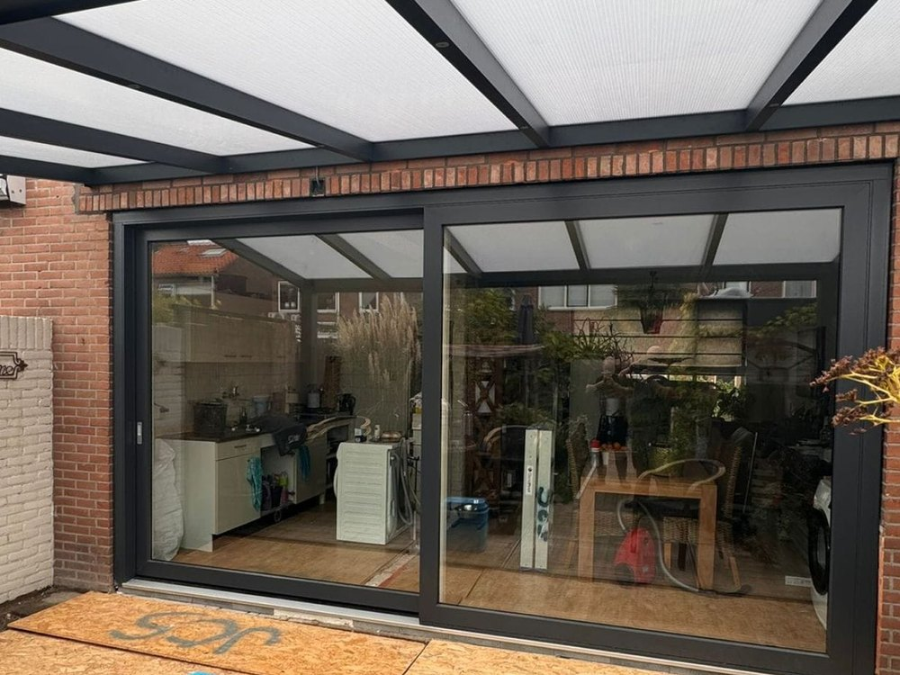
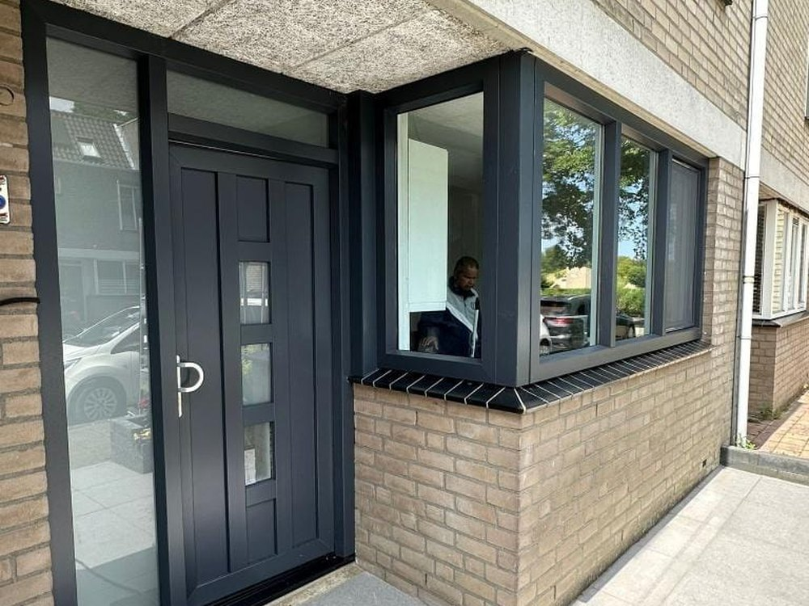

In uw offerte staat wát wij leveren en wat het kost. Deze bijlage laat zien
waaruit uw kozijnen bestaan: het profiel, het glas,
het hang- en sluitwerk en de garantie die u erop krijgt.
Wij monteren de Aluplast Ideal 7000 NL: een Duits kunststof profielsysteem dat speciaal is ontwikkeld voor de Nederlandse renovatiemarkt. Het heeft een bouwdiepte van 85 mm en een zeskamerconstructie — meer kamers betekent meer stilstaande lucht in het profiel, en stilstaande lucht isoleert.
De NL-uitvoering is een verdiept profiel met een inbouwdiepte van 120 mm. Dat is precies de maat die in Nederlandse gevels past, waardoor uw nieuwe kozijn dezelfde schaduwwerking en diepte houdt als het kozijn dat eruit gaat. Uw gevel blijft er dus uitzien zoals u gewend bent — alleen beter geïsoleerd, stiller en zonder onderhoud.

Uitgevoerd werk: kozijnen en voordeur in antraciet, geplaatst door onze eigen monteurs.
85 mm
Bouwdiepte van het profiel
6
Kamers in kozijn en vleugel
1,1
Uf-waarde W/m²K
10 jaar
Garantie op product én montage
Wat dit voor u betekent
Warmer in huis. Minder warmteverlies langs het kozijn, en geen koudestraling meer langs het raam.
Stiller. De drievoudige afdichting en het zware glaspakket dempen verkeers- en buitengeluid.
Geen onderhoud. Nooit meer schilderen; het profiel blijft kleurvast en vraagt alleen af en toe schoonmaken.
Snel te leveren. Drie tot vier weken productietijd na het inmeten — de kortste levertijd van onze twee lijnen.
Twee lijnen, één keuze
Duurkracht Kozijnen werkt bewust met twee profielsystemen: Aluplast Ideal 7000 NL en Schüco LivIng 82. Allebei Duits, allebei KOMO-gecertificeerd.
Voor uw woning adviseren wij de Aluplast Ideal 7000 NL. Naast de prestaties speelt de levertijd mee: 3 tot 4 weken voor Aluplast, tegenover 6 tot 8 weken voor Schüco LivIng.
Tot aan het bouwkundig inmeten kunt u nog van profiel wisselen. Vraag ons gerust om een vergelijking.
Hieronder ziet u een doorsnede door kozijn en draaiend deel: bovenin de buitenzijde,
onderin uw woonkamer. De zes kamers, de drievoudige
afdichting en de versterkingskamer zijn de drie onderdelen die het verschil maken.
Schematische weergave — bedoeld om de opbouw uit te leggen, niet op schaal en niet maatvoerend.
1Zeskamerprofiel. Gescheiden luchtkamers in kozijn én vleugel remmen de warmtestroom van binnen naar buiten.
2Versterkingskamer. Verzinkt staal (of Powerdur-versterking) houdt het kozijn kaarsrecht, ook bij grote maten.
3Middendichting. De derde afdichting scheidt de natte buitenzone van de droge binnenzone — winst op isolatie én geluid.
4Vleugel, 85 mm. Even diep als het kozijn, met dezelfde kamerindeling en versterking.
5Glaslat. Aan de binnenzijde gemonteerd: het glas is van buitenaf niet uit te nemen.
6Beglazing tot 51 mm. Ruimte voor HR++, triple of geluidwerend glas — nu of bij een latere upgrade.
Waarom die middendichting telt. Veel goedkopere kozijnen hebben twee afdichtingen. De Ideal 7000 NL heeft er drie. De extra dichting houdt de sponning droog, waardoor er minder koude lucht tot in het profiel komt. U merkt dat aan de tocht die wegblijft en aan het geluid dat buiten blijft.
Aluplast Ideal 7000 NL — Verdiept profiel, ontwikkeld voor de Nederlandse renovatiemarkt
Herkomst
Aluplast GmbH, Karlsruhe (Duitsland)
Bouwdiepte profiel
85 mm
Inbouwdiepte (NL, verdiept)
120 mm, met vaste aanslag
Kamerindeling
Zeskamersysteem in kozijn en vleugel
Afdichting
Drievoudig, met doorlopende middendichting
Uf-waarde profiel
1,1 W/m²K
Uw-waarde raam
Vanaf 1,2 W/m²K met HR++; met triple beglazing tot 0,70 W/m²K haalbaar
Maximale glasdikte
Tot 51 mm — ruimte voor HR++, triple en geluidwerend glas
Versterking
Verzinkt staal in de versterkingskamer; Powerdur-versterking optioneel
Hoekverbinding
Diagonale verstekverbinding, machinaal gelast
Geluidsisolatie
Tot 46 dB, afhankelijk van de gekozen beglazing
Certificering
KOMO-gecertificeerd, SKG-getest hang- en sluitwerk; glasopbouw conform NEN 2608
Levertijd productie
3 tot 4 weken na bouwkundig inmeten
Standaard beglazing
Type
HR++ isolatieglas
Opbouw
4 – 16 – 4 mm, totaal 24 mm
Ug-waarde
1,1 W/m²K
Vulling
Argon, met warme afstandhouder
Norm
NEN 2608, KOMO-keurmerk
Triple beglazing (HR+++), geluidwerend glas, zonwerend glas en veiligheidsglas volgens
NEN 3569 zijn leverbaar tegen meerprijs. Wat er in úw offerte staat, leest u op het
offerteblad zelf.
Wat de U-waarde betekent
De U-waarde zegt hoeveel warmte er per vierkante meter verloren gaat.
Hoe lager, hoe beter.
Uf — alleen het kozijnprofiel
Ug — alleen het glas
Uw — het complete raam, glas en profiel samen
Ter vergelijking: enkel glas in een houten kozijn zit rond de 5,0 W/m²K.
Uw nieuwe kozijnen met HR++ komen op ongeveer 1,2 — ruim vier keer zo goed.
Over de opgegeven waarden. De genoemde U-waarden zijn systeemwaarden van
de fabrikant, gemeten onder genormeerde omstandigheden. De werkelijke waarde van úw raam
hangt af van de maat, de indeling en het gekozen glas. De definitieve prestaties leggen we
vast bij het bouwkundig inmeten.
Alle draai-kiepramen en deuren krijgen standaard SKG**-beslag met meerpuntsluiting en stalen versterking.
Daarmee voldoen uw ramen en deuren standaard aan weerstandsklasse RC2 volgens NEN 5096.
Op verzoek uit te voeren op PKVW-niveau — het Politiekeurmerk Veilig Wonen, waar veel inboedelverzekeraars premiekorting voor geven.
Draai-kiepramen zijn in twee ventilatiestanden te zetten en draaien altijd naar binnen open.
Voor- en achterdeur hebben een driepuntssluiting met automatisch slot, cilinderslot en kerntrekbeveiliging.
Voor- en achterdeur worden geleverd met een onderdorpel van Isostone.

Draai-kiepraam van binnenuit: naar binnen draaiend, met twee ventilatiestanden.
Kleuren en afwerking
Standaard leveren wij in wit RAL 9010. De Ideal 7000 NL is daarnaast
leverbaar met gekleurde folie aan de buitenzijde en wit aan de binnenzijde — de meest
gekozen combinatie in Nederland.
Houtnerfdecors zoals Golden Oak en Noten voor woningen met een klassieke gevel
Binnenzijde standaard wit RAL 9016 glad, of in dezelfde kleur als buiten
Kleurvast en UV-bestendig; nooit meer schilderen
Afwerking binnen
Na de montage werken wij de aansluiting tussen kozijn en binnenmuur af met een kunststof
hoek, zodat u geen stuc- of schilderwerk hoeft te laten doen. Standaardkleuren zijn
wit RAL 9016 en crème RAL 9001, glad.
Vensterbanken
Waar nu een vensterbank zit, plaatsen wij er een terug — tenzij anders afgesproken.
Onze vensterbanken zijn krasvast, UV-bestendig en ongevoelig voor vocht en warmte.
Uitgevoerd werk



Projecten van Duurkracht Kozijnen. Uitvoeringen kunnen per woning verschillen; uw eigen indeling,
kleur en draairichting leggen we vast bij het bouwkundig inmeten.
Wij leveren en monteren in eigen beheer. Daardoor hoeft u bij een klacht niet te zoeken wie
verantwoordelijk is: u meldt het bij ons, en wij lossen het op. Eén aanspreekpunt, voor zowel
het product als het werk.
10 jaar
Op het kozijnprofiel in basiskleur
10 jaar
Op de montage door onze monteurs
10 jaar
Op de beglazing HR++ en HR+++
Waarop de garantie geldt
Profiel. Materiaal- en fabricagefouten, vormvastheid en kleurvastheid van het profiel in basiskleur.
Beglazing. Lekkage van de isolerende beglazing — het beslaan tussen de ruiten door een defecte randafdichting.
Hang- en sluitwerk. Goede werking van scharnieren, sluitingen en bediening bij normaal gebruik.
Montage. De plaatsing, de aansluiting op het metselwerk en de waterdichtheid van die aansluiting.
Waarop de garantie niet geldt
Schade door geweld van buitenaf, inbraak, storm, brand of andere calamiteiten
Glasbreuk anders dan door een aantoonbaar materiaalgebrek
Krassen en beschadigingen die bij oplevering niet zijn gemeld
Gebreken door verkeerd gebruik, eigen aanpassingen of reparaties door derden
Normale slijtage van bewegende delen en afdichtingsrubbers
Thermische breuk van glas door afplakken, beschilderen of het plaatsen van folie
Verkleuring van niet-basiskleuren buiten de door de folieleverancier gestelde termijn
Werk van derden dat op onze kozijnen aansluit, zoals stuc-, schilder- of metselwerk
Voorwaarden waaronder de garantie loopt
De garantietermijn gaat in op de datum van oplevering
De factuur is volledig voldaan volgens de overeengekomen betalingsvoorwaarden
De kozijnen zijn normaal gebruikt en onderhouden — schoonmaken met water en een mild middel, geen schuurmiddelen
Gebreken worden binnen redelijke termijn na ontdekking schriftelijk bij ons gemeld
Wij krijgen de gelegenheid het gebrek zelf te onderzoeken en te herstellen
De garantie is gekoppeld aan het adres en gaat bij verkoop van de woning over op de nieuwe eigenaar
Service melden
Een gebrek meldt u bij ons kantoor, met foto's en het offerte- of factuurnummer.
Wij nemen binnen vijf werkdagen contact op om een afspraak te plannen.
085 073 1660 · info@duurkrachtkozijnen.nl
Voorrang van voorwaarden. Deze bijlage vat de garantie samen en is bedoeld
om u te informeren. Op al onze leveringen, offertes en overeenkomsten zijn onze algemene
verkoop- en leveringsvoorwaarden van toepassing. Wijkt de tekst hierboven daarvan af, dan
gaan de algemene voorwaarden en de offerte zelf voor.
Deze productbijlage hoort bij de offerte waaraan hij is gekoppeld en bevat geen prijzen. Prijzen, aantallen en posities staan op het offerteblad zelf. Aan deze bijlage kunnen geen rechten worden ontleend voor zover zij afwijkt van de offerte of van onze algemene verkoop- en leveringsvoorwaarden.